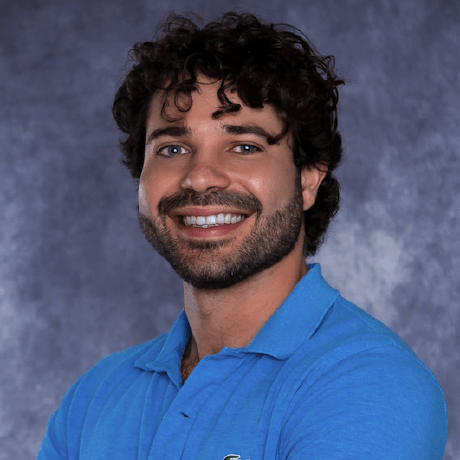

Phenomenological Physicist
PhD Candidate at Caltech · Incoming Postdoctoral Researcher at UC San Diego
Samuel Patrone is a phenomenological physicist completing his PhD at the California Institute of Technology, where he works at the Walter Burke Institute for Theoretical Physics under the guidance of Prof. Mark B. Wise. In September 2026, he will join the University of California, San Diego as a Postdoctoral Researcher.
His research lives at the crucial interface between abstract mathematical models and experimental observations in cosmology and particle physics. From particle tracks in beam dump experiments to the large-scale structure of galaxies, Samuel specializes in making theories testable—translating complex frameworks into predictions for experiments probing new physics beyond the Standard Model.
With publications in Physical Review D, JCAP, and JHEP, and invited talks at leading institutions including CERN, Texas A&M University, Northwestern University, and the University of Zurich, he brings both depth and clarity to the frontiers of theoretical physics.
Sapienza University of Rome
summa cum laude · Top of classSapienza University of Rome
summa cum laude · Top 5%California Institute of Technology
Walter Burke Institute · Advisor: M. B. WiseUC San Diego
Starting September 2026Investigating power spectra and non-Gaussianities in warm inflation, with a focus on the phenomenological implications of dissipation mechanisms with fractional temperature dependence.
Refining searches for axionlike particles in beam dump experiments and calculating radiative corrections to quantify the naturalness of models beyond the Standard Model.
Developing and studying leptogenesis in Nelson-Barr models, connecting CP violation to the observed matter-antimatter asymmetry of the universe.
Analytical and numerical calculations of the galaxy bispectrum, resolving regularization ambiguities in the galaxy bias expansion within the effective field theory framework.
“My work is designed to make the invisible universe accessible—exploring how microscopic phenomena leave distinct fingerprints on current observables, from the smallest tracks in particle accelerators to the large-scale structure of galaxies.”
Phys. Rev. D 113, 075009 (2026)
Refined axionlike particle searches in beam dump experiments at SHiP (CERN) and BDX (JLab), finding order-of-magnitude enhancements in visible decay yields by accounting for the complete electromagnetic shower.
Co-author on 16+ peer-reviewed papers, including 10 as a member of the LIGO Scientific and Virgo Collaborations. Full publication record:
A dedicated educator with a deep passion for sharing knowledge, Samuel has over five years of teaching experience at Caltech, spanning courses from introductory quantum mechanics to advanced quantum field theory. He holds a Certificate of Practice in University Teaching and served as Physics TA Fellow, coordinating the department's teaching assistant program.
As a science communicator at the Sapienza Physics Museum in Rome, he spent three years conducting bilingual guided tours, bringing nineteenth- and twentieth-century physics experiments to life for diverse audiences.
“Teaching and learning are inseparable—they are a shared adventure of discovery. I create inclusive environments where complex concepts become accessible through active engagement and collaborative learning. My goal is to inspire curiosity while ensuring every student feels valued and supported.”
With over a decade of dedicated study and an Advanced Certificate from Trinity College London, music remains a wellspring of discipline and creative expression. Samuel is a regular presence at classical music concerts, drawing inspiration from the interplay of structure and emotion.
Beyond the laboratory, Samuel finds great pleasure in reading and engaging in thoughtful discussions on philosophy, literature, and poetry—pursuing beauty and truth in all its forms.
Interested in research collaboration, a speaking invitation, or simply want to discuss physics? I’d love to hear from you.
samuel@samuelpatrone.com